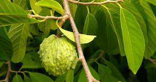

Annonaceae
Custard Apple / Soursop / Pawpaw Family
Annonaceae is a large family of flowering plants belonging to the ancient Magnoliales order. Primarily distributed in tropical regions worldwide, it consists mostly of trees, shrubs, and lianas characterized by simple, alternate leaves arranged in two ranks, flowers typically with parts in threes (3 sepals, 3+3 petals), numerous stamens, usually distinct carpels, and often large, fleshy aggregate fruits or syncarps like soursop, custard apple, and cherimoya. The family also includes the temperate North American pawpaw (Asimina).
Overview
Annonaceae is the largest family within the Magnoliales, an early-diverging lineage of angiosperms. It comprises approximately 110-130 genera and 2,400-2,500 species. The family is predominantly found in tropical lowland rainforests across the globe, with major centers of diversity in the Neotropics, Africa, and Southeast Asia. A notable exception is the genus Asimina (pawpaw), which occurs in temperate North America.
Members are typically woody plants – trees, shrubs, or lianas – often possessing aromatic bark, leaves, or flowers due to the presence of essential oils and other secondary metabolites. Key characteristics include alternate leaves arranged in two ranks (distichous), flowers with parts typically in whorls of three (especially the 6 petals in two distinct whorls), numerous stamens spirally arranged on a receptacle, and a gynoecium usually composed of multiple separate carpels (apocarpous). This apocarpous condition often leads to aggregate fruits composed of individual fleshy units (monocarps), although these sometimes fuse into a single structure (syncarp) in genera like Annona.
Annonaceae holds significant economic importance, primarily for its edible fruits. Genera like Annona provide popular tropical fruits such as soursop, sweetsop (sugar apple), custard apple, cherimoya, and ilama. The North American pawpaw (Asimina triloba) also yields edible fruit. Essential oils from Cananga odorata (Ylang-ylang) are crucial in the perfume industry. Some species provide timber, traditional medicines, or are grown ornamentally.
Quick Facts
- Scientific Name: Annonaceae
- Common Name: Custard Apple family, Soursop family, Pawpaw family
- Number of Genera: Approximately 110-130
- Number of Species: Approximately 2400-2500
- Distribution: Pantropical, with few temperate extensions (esp. North America)
- Evolutionary Group: Angiosperms - Magnoliids - Magnoliales
- Current Date: March 29, 2025
Key Characteristics
Growth Form and Habit
Mostly evergreen or deciduous trees and shrubs, also includes many lianas (woody climbers). Plants are often aromatic.
Leaves
Leaves are alternate, simple, with entire margins, and characteristically arranged in two ranks along the stem (distichous). They are usually petiolate and lack stipules. Pellucid dots (oil glands) may be present.
Inflorescence
Flowers are often solitary or borne in small cymose clusters. They can be terminal, axillary, leaf-opposed, or arise from older wood (cauliflorous or ramiflorous). Flowers are frequently pendulous and possess strong, often fruity or sometimes unpleasant, fragrances.
Flowers
Flowers are usually bisexual (rarely unisexual) and actinomorphic (radially symmetrical). Floral parts are often arranged spirally or in whorls of three. Flowers are often fleshy or leathery.
- Perianth: Typically differentiated into sepals and petals. Calyx usually consists of 3 distinct or basally fused sepals. Corolla typically consists of 6 petals arranged in two distinct whorls of 3 (3+3). Petals are often thick and fleshy, sometimes differing between the inner and outer whorls in size, shape, or color (ranging from greenish/cream to yellowish, brownish, maroon, or purple).
- Androecium: Stamens are usually numerous (often >100) and spirally arranged on a typically convex receptacle. Filaments are short and thick. Anthers often have the connective expanded into a terminal appendage that covers the anther tip. Pollen is released outwards (extrorse).
- Gynoecium: Carpels are usually numerous (sometimes few, rarely 1) and typically distinct (apocarpous), spirally arranged above the stamens. Each carpel contains one to many ovules. The style is usually short or absent, with various stigma shapes. Rarely, carpels are fused (syncarpous).
Fruits and Seeds
Reflecting the typically apocarpous gynoecium, the fruit is usually an aggregate of separate, fleshy, berry-like monocarps (each developing from a single carpel), often stalked. In some genera (Annona), these monocarps fuse together during development to form a large, fleshy syncarp. Rarely, the fruit consists of dry, dehiscent follicles.
Fruit usually composed of multiple fleshy monocarps, sometimes fused into one large fleshy mass (Annona).
Seeds are often large, one to many per monocarp or locule. The endosperm is abundant, oily, and characteristically ruminate (mottled or folded due to intrusions of the seed coat).
Chemical Characteristics
The family produces a variety of secondary metabolites, including benzylisoquinoline alkaloids, acetogenins (Annonaceous acetogenins, known for cytotoxic and pesticidal activities), essential oils (contributing to aromas), terpenoids, and tannins.
Field Identification
Identifying Annonaceae involves looking for their characteristic leaf arrangement, floral structure (especially the perianth in threes), numerous stamens, distinct carpels (usually), and unique fruits, often combined with an aromatic quality:
Primary Identification Features
- Habit: Trees, shrubs, or lianas, often aromatic.
- Alternate, Simple, Entire, Distichous Leaves: Leaves arranged in two flat rows along the stem, no stipules.
- Flowers with Parts in Threes: Typically 3 sepals and 6 petals in two whorls (3+3). Petals often thick/fleshy.
- Numerous Stamens: Spirally arranged on receptacle, short thick filaments, connectives often expanded over anthers.
- Apocarpous Gynoecium (Usually): Carpels numerous and distinct (separate) on the receptacle.
- Aggregate Fruit or Syncarp: Fruit usually composed of multiple fleshy monocarps, sometimes fused into one large fleshy mass (Annona).
- Ruminate Endosperm: (Requires seed examination) Endosperm appears mottled or folded.
Secondary Identification Features
- Pendulous Flowers: Flowers often hang downwards. Pendulous Flowers: Flowers often have a distinct fruity or sometimes heavy/unpleasant smell.
- Tropical Distribution (Mostly): Predominantly found in tropical regions (Asimina is temperate).
- Pellucid Dots: May be present in leaves.
Seasonal Identification Tips
- Year-round: Habit (tree/shrub/liana) and the alternate, simple, entire, distichous leaves are key vegetative features. Check for aromatic scent in crushed leaves or bark.
- Flowering Season: Variable in tropics. Look for the characteristic flowers with 3 sepals, 3+3 fleshy petals, numerous stamens, and multiple carpels. Note the fragrance.
- Fruiting Season: Variable. The distinctive aggregate fruits or large syncarps are highly diagnostic when present.
Common Confusion Points
- Magnoliaceae (Magnolia family): Also Magnoliales with large flowers, numerous stamens, and distinct carpels. Magnolias typically have stipules (often leaving a scar around the twig), floral parts often more numerous and less strictly whorled (especially petals), and fruit is typically an aggregate of follicles or samaras on an elongated receptacle (cone-like), not fleshy monocarps/syncarps.
- Lauraceae (Laurel family): Trees/shrubs, often aromatic, with alternate simple entire leaves (but not usually distichous). Flowers are small, typically 6 tepals (undifferentiated), few stamens (often 9 in whorls of 3, with complex anther dehiscence via valves), superior ovary with 1 carpel/ovule, and fruit is a drupe.
- Myristicaceae (Nutmeg family): Also Magnoliales. Trees, often aromatic, alternate simple entire leaves. Flowers small, unisexual (dioecious), with 3 fused tepals, fruit a fleshy capsule-like structure splitting to reveal a single large seed often covered by a colorful aril (nutmeg/mace).
- Ebenaceae (Ebony family): Trees/shrubs with alternate simple entire leaves. Flowers usually unisexual, with fused corolla (sympetalous), stamens attached to corolla tube, superior ovary, fruit a berry.
Key features for Annonaceae are the combination of alternate distichous leaves, 3 sepals + 3+3 petals (often fleshy), numerous stamens with modified connectives, apocarpous gynoecium (usually), and aggregate/syncarp fruit with ruminate endosperm.
Field Guide Quick Reference
Look For:
- Trees, shrubs, lianas (often aromatic)
- Alternate, simple, entire, distichous leaves
- No stipules
- Flowers: 3 sepals, 6 petals (3+3), often fleshy
- Numerous stamens, spiral, short/thick
- Numerous distinct carpels (apocarpous)
- Fruit: Aggregate of monocarps or syncarp
- Seeds with ruminate endosperm
Key Variations:
- Habit: Tree, shrub, liana
- Petal shape/size/color
- Fruit: Separate monocarps vs. Fused syncarp
- Carpel number (few to many)
- Flower position (axillary, cauliflorous, etc.)
Notable Examples
This large tropical family includes famous fruits, fragrant flowers, and the temperate pawpaw:

Annona muricata
Soursop / Guanábana
A small evergreen tree widely cultivated in the tropics for its large, spiny, green fruit with white, fibrous, tart-sweet pulp. The fruit is a syncarp formed from the fusion of numerous individual carpels. Flowers are large, yellowish-green, with fleshy petals.

Annona squamosa
Sugar Apple / Sweetsop
A small tree or shrub cultivated for its fruit, which is typically round with a bumpy surface formed by the loosely cohering segments (derived from individual carpels). The pulp is white, sweet, and custard-like with numerous black seeds.

Asimina triloba
Pawpaw
A small deciduous tree native to eastern North America, the northernmost member of the family. It produces large, oblong, greenish-yellow to brown fruits with sweet, custard-like, yellow flesh and large brown seeds. Flowers are maroon, appearing before the leaves.

Cananga odorata
Ylang-ylang / Cananga Tree
A tropical tree native to Southeast Asia and surrounding regions, cultivated for its intensely fragrant flowers. The essential oil extracted from the drooping, yellowish, strap-shaped petals is a key component in high-end perfumes (like Chanel No. 5).

Monoon longifolium (syn. Polyalthia longifolia)
Mast Tree / False Ashoka
A tall, evergreen tree native to India and Sri Lanka, widely planted as an ornamental avenue tree in tropical regions due to its distinctive columnar shape with drooping branches and long, narrow, wavy-edged leaves. Flowers are inconspicuous, star-shaped, greenish-yellow.

Uvaria sp.
(Genus Uvaria)
A large genus of lianas and shrubs found in the Old World tropics. Species often have stellate (star-shaped) hairs, showy reddish or yellowish flowers with spreading petals, and fruits that are aggregates of stalked, sausage-shaped or rounded monocarps.
Phylogeny and Classification
Annonaceae is the largest and most diverse family within the Magnoliales, one of the orders belonging to the Magnoliids clade. Magnoliids represent an early-diverging group of angiosperms, distinct from monocots and eudicots, that branched off after Amborellales and Nymphaeales but before the main radiation of monocots and eudicots. They share some features considered ancestral among flowering plants, such as flowers with numerous parts often arranged spirally.
Within the Magnoliales, Annonaceae forms a well-supported monophyletic group. Its sister family is generally considered to be the small, monogeneric family Eupomatiaceae (containing Eupomatia) from Australia and New Guinea. Other families in the order include Magnoliaceae (magnolias), Myristicaceae (nutmeg), Degeneriaceae, and Himantandraceae. The internal phylogeny of Annonaceae is complex, often divided into several subfamilies and tribes based on molecular data and morphology.
Position in Plant Phylogeny
- Kingdom: Plantae
- Clade: Angiosperms (Flowering plants)
- Clade: Magnoliids
- Order: Magnoliales
- Family: Annonaceae
Evolutionary Significance
Annonaceae offers key insights into early angiosperm evolution and tropical diversity:
- Basal Angiosperm Lineage: As part of the Magnoliids, it provides clues about floral structure, reproductive biology, and chemical evolution near the base of the angiosperm tree.
- Apocarpy: The prevalence of distinct carpels (apocarpy) is considered an ancestral condition among angiosperms, well-represented in this family.
- Fruit Evolution: Shows diversification from aggregates of separate monocarps to fused syncarps, illustrating pathways in fleshy fruit evolution.
- Ruminate Endosperm: The characteristic ruminate endosperm is a notable seed feature found scattered across different angiosperm groups, its function and evolution being areas of interest.
- Chemical Diversity: Produces unique classes of compounds like Annonaceous acetogenins, highlighting the chemical diversification in early angiosperm lineages for defense or other roles.
- Tropical Radiation: Represents a major evolutionary radiation in tropical ecosystems worldwide, particularly in rainforest environments.